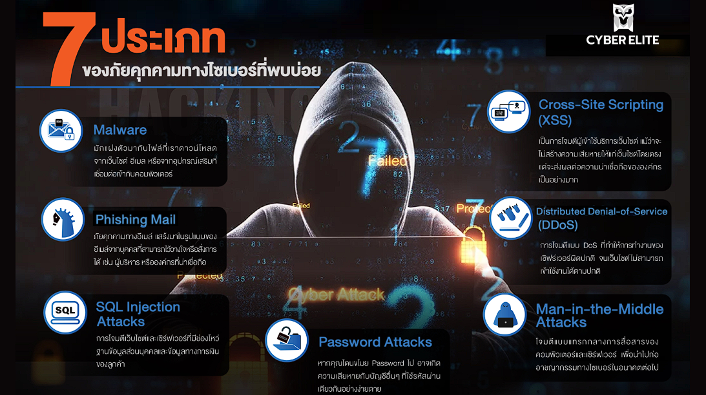

ความหมายของความปลอดภัยของระบบสารสนเทศ
ความปลอดภัยของระบบสารสนเทศ หมายถึง การปกป้องอุปกรณ์และข้อมูลที่เกี่ยวข้องกับ เทคโนโลยีสารสนเทศ เช่น ฮาร์ดแวร์ ซอฟต์แวร์ ข้อมูล ระบบเครือข่าย และการสื่อสาร เพื่อป้องกันการเข้าถึงหรือการกระทำที่ไม่ได้รับอนุญาต
ประเภทของภัยคุกคามต่อเทคโนโลยีสารสนเทศ
- ภัยคุกคามต่อฮาร์ดแวร์: ไฟฟ้าขัดข้อง เครื่องชำรุด ความร้อน น้ำ ไฟฟ้าลัดวงจร
- ภัยคุกคามต่อซอฟต์แวร์: โปรแกรมไวรัส มัลแวร์ ซอฟต์แวร์ผิดพลาด
- ภัยคุกคามต่อข้อมูล: การลบ ขโมย หรือแก้ไขข้อมูลโดยไม่ได้รับอนุญาต
- ภัยคุกคามต่อเครือข่าย: การดักจับข้อมูล การโจมตีเครือข่าย
ภัยคุกคามต่อระบบรักษาความปลอดภัยทางคอมพิวเตอร์
- มัลแวร์ (Malware): โปรแกรมที่มุ่งทำลายระบบหรือขโมยข้อมูล
- ไวรัส (Virus): โปรแกรมที่คัดลอกตัวเองและทำลายข้อมูล
- หนอน (Worm): แพร่กระจายผ่านเครือข่ายโดยไม่ต้องอาศัยผู้ใช้
- โทรจัน (Trojan Horse): โปรแกรมแฝงในรูปแบบโปรแกรมปกติ
- สปายแวร์ (Spyware): แอบติดตามพฤติกรรมผู้ใช้
- สแปม (Spam): ข้อความหรืออีเมลรบกวนผู้ใช้จำนวนมาก 
แฮ็กเกอร์และแคร็กเกอร์
- แฮ็กเกอร์ (Hacker / White Hat): เจาะระบบเพื่อทดสอบความปลอดภัย ไม่มีเจตนาทำลาย
- แคร็กเกอร์ (Cracker / Black Hat): เจาะระบบเพื่อขโมยหรือทำลายข้อมูล เป็นสิ่งผิดกฎหมาย
การป้องกันและการใช้เทคโนโลยีสารสนเทศอย่างปลอดภัย
- ใช้ซอฟต์แวร์ที่ถูกลิขสิทธิ์
- อัปเดตระบบและโปรแกรมอย่างสม่ำเสมอ
- ติดตั้งและสแกนไวรัสเป็นประจำ
- ใช้ Firewall ป้องกันการบุกรุก
- ตั้งรหัสผ่านที่คาดเดายาก
- หลีกเลี่ยงเว็บไซต์และอีเมลที่ไม่น่าเชื่อถือ
จริยธรรมและกฎหมายในการใช้คอมพิวเตอร์
- ไม่ใช้คอมพิวเตอร์ก่ออาชญากรรม
- ไม่สอดแนมหรือรบกวนผู้อื่น
- ไม่ขโมยหรือแก้ไขข้อมูลของผู้อื่น
- ไม่ละเมิดลิขสิทธิ์ซอฟต์แวร์
ทรัพย์สินทางปัญญา
- ลิขสิทธิ์: งานเขียน เพลง โปรแกรม
- สิทธิบัตร: การประดิษฐ์หรือออกแบบผลิตภัณฑ์
- เครื่องหมายการค้า: สัญลักษณ์หรือโลโก้สินค้า
สัญญาอนุญาต Creative Commons
- BY: ต้องแสดงที่มา
- NC: ห้ามใช้เชิงพาณิชย์
- ND: ห้ามดัดแปลง
- SA: ดัดแปลงต้องใช้สัญญาเดียวกัน
ความเชื่อมโยงระหว่างเนื้อหากับข้อสอบ
- ไฟฟ้าดับ / เครื่องเสีย → ภัยคุกคามต่อฮาร์ดแวร์
- แอบติดตามข้อมูล → สปายแวร์
- ดาวน์โหลดไฟล์แปลก → มัลแวร์ / โทรจัน
- ลิขสิทธิ์ → ทรัพย์สินทางปัญญา / Creative Commons
ความสำคัญของการใช้เทคโนโลยีสารสนเทศอย่างปลอดภัย
การใช้งานเทคโนโลยีอย่างปลอดภัยช่วยลดความเสี่ยงในการสูญหายของข้อมูล ป้องกันการโจรกรรมข้อมูลส่วนตัว และทำให้ใช้งานระบบคอมพิวเตอร์ได้อย่างมีประสิทธิภาพ และมีความรับผิดชอบต่อสังคม